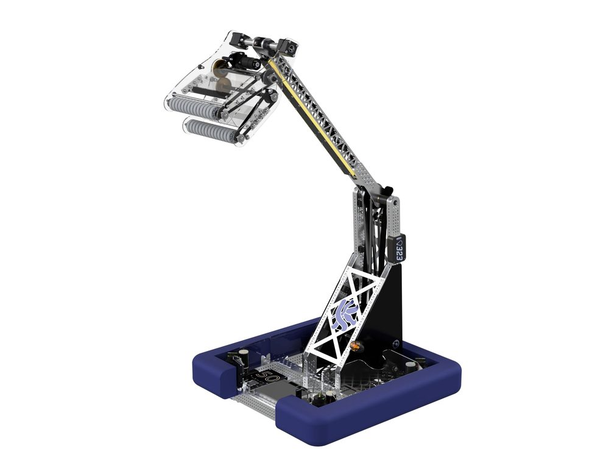
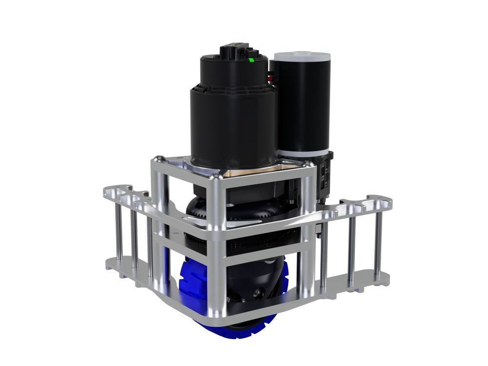
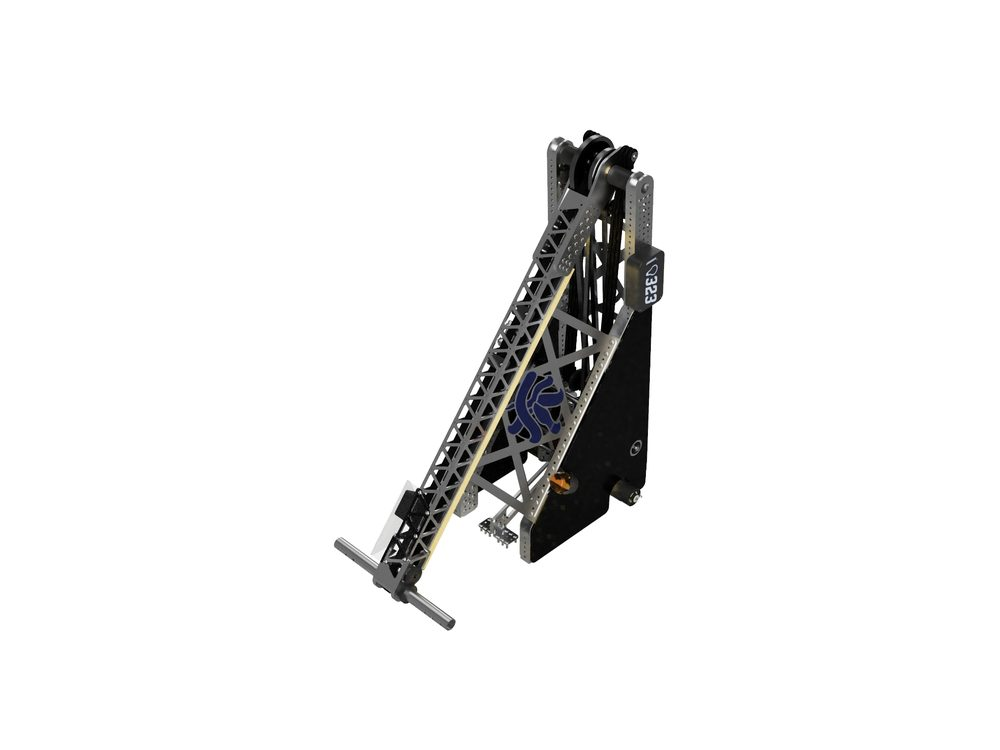
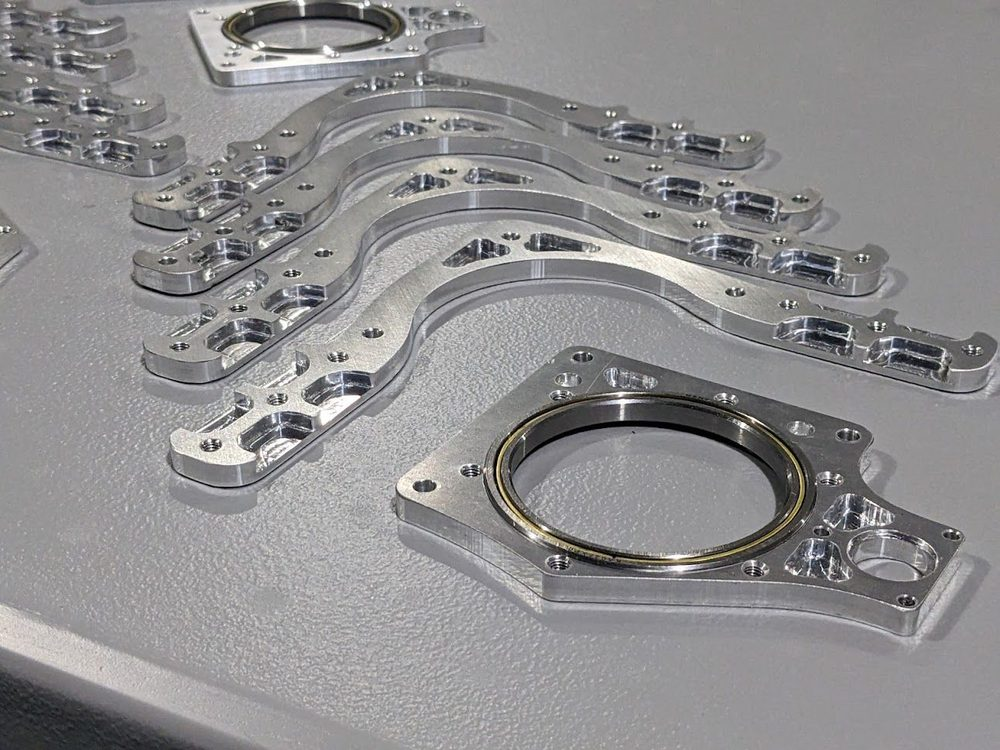

FRC 2023
Designed approximately 20% of the robot, machined approximately 20% of its components, and completed approximately 40% of assembly.
Technical Highlights
- The team's 26-by-26-inch drive base used a fifth-generation custom swerve module and reached a calculated top speed of 20.1 feet per second.
- A two-joint arm used coaxial shoulder and wrist gearboxes mounted near the base to reduce the robot's center of gravity.
- Custom components included an encoder adapter board, nylon pulleys, and more than 150 3D-printed parts.
- Manufacturing included CNC routing, milling, turning, and additive manufacturing.




